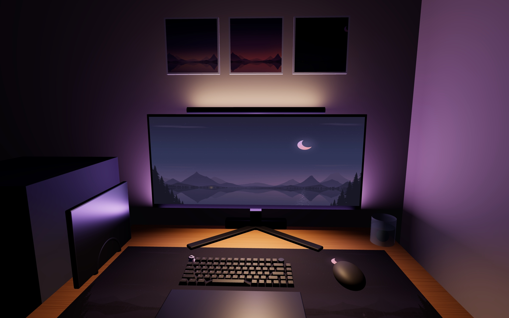
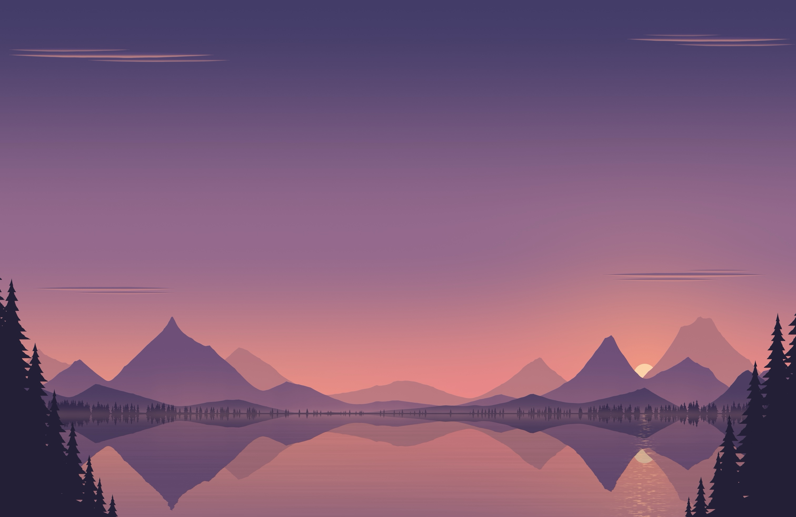
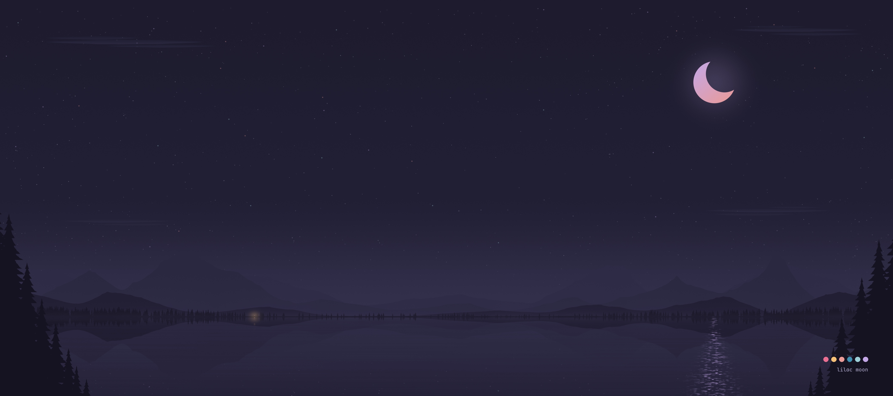
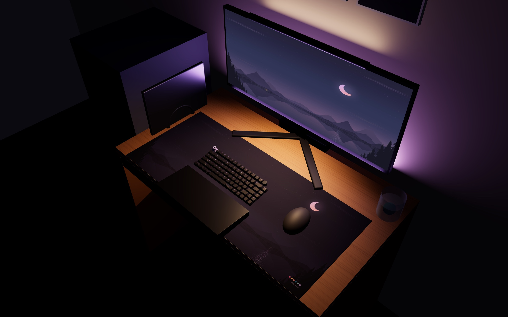

One theme across everything I touch: Rosé Pine Moon, made my own. A deep purple-grey ground, soft lilac-grey text, lavender for what's mine, rose for warmth, and a crescent moon that shows up on the screen, the desk and the wall.
Rosé Pine Moon, with my own ground and text. Lavender marks selection and accents; rose and gold are used sparingly.
#1f1d30#2a273f#cfcce0#c4a7e7#ea9a97#f6c177#9ccfd8#3e8fb0
Two soft chimes, made for this setup. One sound means "something needs me" everywhere: an agent with a question, and every macOS alert.

Black aluminum, double gasket, smooth linears: a soft, deep thock. Wireless to three devices.
Black keycaps with purple legends: the terminal, in keys. Made in Germany.
A lavender resin rose on Esc: the one lilac key.
Stitched edges; its back edge slides just under the monitor stand's feet.
Light wood to match the pine desk.
The MacBook stands up beside the monitor, with Insert H for the 14".

Warm light on the desk, about 2700 K, and its rear backlight washing the wall above the monitor, which is what lights the prints.
Behind the monitor: a lilac glow up the wall and around the screen.
Dawn, sunset and night from the dynamic wallpaper: three 8-inch tiles hung 15 cm above the monitor.
A tiny green orb in a glass jar, in the back-right corner.